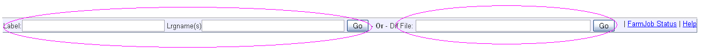

Farm Job Status page:
Farm Job status page is used to monitor the status of the farm job submitted.
Inputs: All or atleast one of below Inputs are:
- Username - This is the oracle user Global UID. Only one allowed
- Transaction name - To display jobs submitted only for this txn. Only one transaction name
- Farm Job Id - Only one farm job id
Additionaly we have "Since days" option which can be used with any of the above combinations. This implies the number of days since the farm job is submitted.
Results:
- Results contains a table with the list of farmjobs and details of each like, date, transaction name, farm job status, lrgnames, ongoing & completed lrg count
- When clicking on each of the row, you will be able to see the details of the farm showjobs command
- You have the option to refresh to the latest content by clicking the "Showjobs" button
- You can also view the "farm showdiffs" results by clicking "Showdiffs" button
- If you would like to triage the dif details, click on the "Triage button which will give you the list of dif files and link to the dif file
- There is also an option to view the screenshot of the test case (if it is selenium) by clicking the screenshot icon.
Label Triage page:
Helps to triage the daily label lrgs issues faster !. You can see the difs, logs and screenshots if the test is a selenium test.
To go to label triage page, click on the "Label dif triage" in the "FarmJob Status" page

Inputs:
- Label name
- Lrgname(s) - One or more lrgnames separated by comman. You can also use % wildcard to search for lrgs
- Dif file location - You can also provide the dif file location directly and access screenshot,log,dif files
Results:
- It gives you the list of dif files and link to the dif file
- There is also an option to view the screenshot(if it is selenium) of the test case by clicking the screenshot icon.
You can also view log, err.log, html and dif contents of the test.
Link to the farm job status / label dif triage page is available as a shortcut from the "Oracle ST toolbar" Firefox extension.

Important things to note:
- The screenshot image cache will be cleared at the frequency of 10 mins. Incase you couldnot able to see the image click on the "Show Screenshot" button to reload the images
- Sometime when you click on the image you will see the error as "Sorry!!! Cannot process triage now. " In such case, check if the results location for that farmjob is available for that run.
- For queries or reporting issues, please contact senthil.murugan@oracle.com
Happy triaging ;)